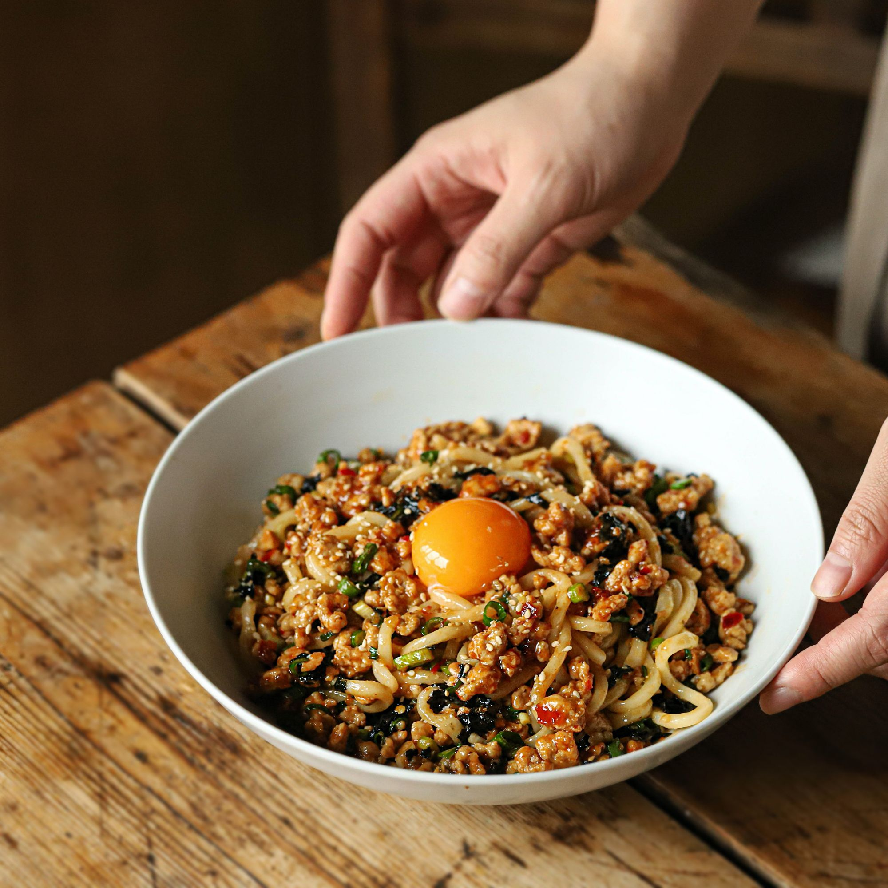

마파 비빔면
칼국수면에 굴소스와 두반장으로 매콤하게 볶아낸 다진고기를 고명으로 올린 음식으로,
매콤한 고기 고명과 진하고 부드러운 노른자, 탱글탱글한 면발이 어우러져 다양한 맛과 식감을 한 입에 느낄 수 있는 음식이예요.

기본 재료 : 2인분 기준
- 칼국수면 2인분
- 간 돼지고기 200g
- 달걀 노른자 2개
- 쪽파 4줄기
- 김밥 김 2장
- 다진 마늘 1큰술
- 땅콩 4큰술
- 라임 또는 레몬즙 2큰술
- 통깨 2큰술
고기 양념 재료 : 2인분 기준
- 건고추 2개
- 두반장 1큰술
- 굴소스 1큰술
- 간장 1/2큰술
- 후춧가루 약간
- 맛술 1큰술
- 설탕 1큰술
조리 과정
- 1. 쪽파는 송송 썰어주세요. 건고추, 김, 땅콩은 잘게 부숴주세요.
- 2. 볼에 고기 양념 재료를 넣고 섞어주세요.
- 3. 달군 팬에 기름을 약간 두른 후 다진 마늘을 넣어 볶다가 간 돼지고기를 넣어 볶아주세요. 고기가 익으면 양념 재료를 넣어 한 번 더 볶아주세요.
- 4. 끓는 물에 면을 넣어 3~4분간 삶아주세요. 채반에 건져 물기를 빼주세요.(tip. 거품이 넘치지 않도록 찬물 1컵을 부어가며 끓여주세요)
- 5. 그릇에 삶은 면을 담고 쪽파와 볶은 고기, 부순 김과 땅콩, 통깨를 뿌린 후 가운데 달걀노른자를 올려주세요.(tip. 통깨를 손바닥으로 가볍게 부숴 넣으면 더욱 고소해요)
- 6. 완성된 마파비빔면에 라임즙을 뿌린 후 맛있게 즐겨주세요.